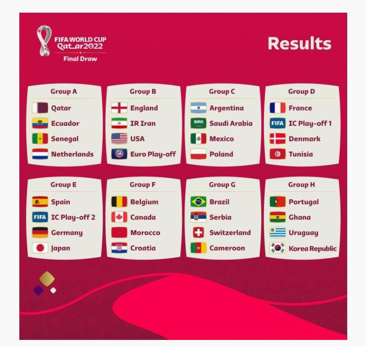

Diferente do habitual, a copa do mundo 2022 acontecerá pela primeira vez em na história, no final do ano, fora do período entre junho e julho.
A copa do mundo será sediada no Catar e começará no dia 21 de novembro.
| População (2022) | 3.175.954 |
| PIB (2020) | U$ 146,4 bilhões |
| Área | 11.610 km2 |
| Língua Oficial | Árabe/Inglês |
É atualmente um dos países mais ricos do mundo e com uma das menores cargas tributárias, segundo o Relatório Global de competitividade.
Mas esse histórico de riquezas se deu a partir dos anos 40, quando se iniciou no país a exploração do petróleo e do gás natural.
O país é rico em recursos naturais, sendo um dos maiores produtores de gás natural do mundo, assim, alavancando sua economia desde 1974 quando o Quatar
petroleum assumiu a exploração e controle do petróleo existente no país.
Segue a seleção dos Grupos que vão participar da Copa do Mundo FIFA 2022
Para saber mais detalhes sobre cada seleção, clique nos links a seguir:
| GRUPO A | GRUPO B | GRUPO C | GRUPO D | GRUPO E | GRUPO F | GRUPO G | GRUPO H |
| Qatar | England | Argentina | France | Spain | Belgium | Brazil | Portugal |
| Ecuador | IR Iran | Soudi Arabia | IC Play-off 1 | IC Play-off 2 | Canada | Serbia | Ghana |
| Senegal | USA | Mexico | Denmark | Germany | Morocco | Switzerland | Uruguay |
| Netherlands | Euro Play-Off | Poland | Tunisia | Japan | Croatia | Cameroon | Korea Republic |